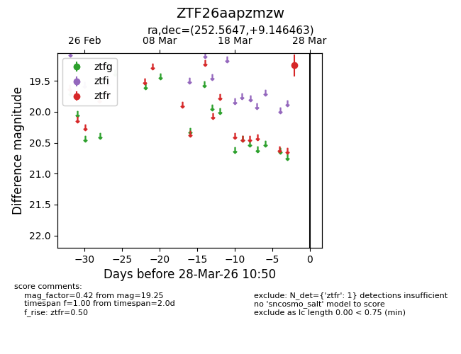
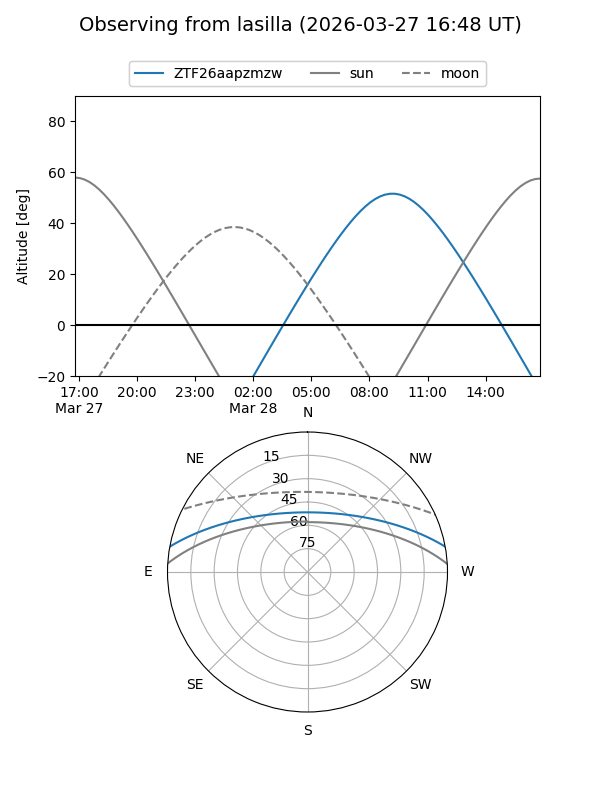
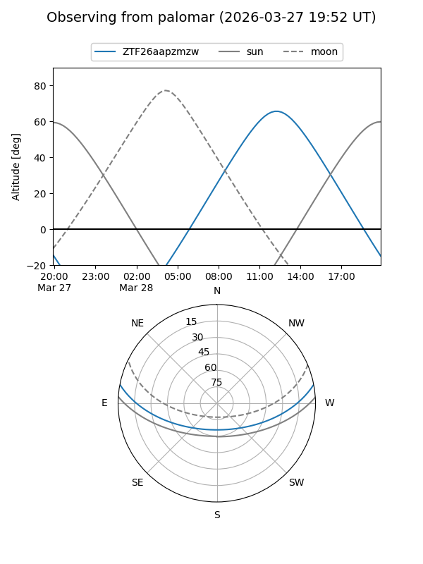

ZTF26aapzmzw
Target ZTF26aapzmzw at 2026-03-28 10:53
Aliases and brokers:
FINK: link
Lasair: link
ALeRCE: link
alt names
ZTF26aapzmzw (ztf,fink_ztf)
Coordinates:
equatorial (ra, dec) = 252.5647,+9.14646
equatorial (HMS+DMS) = 16:50:15.52,+09:08:47.27
galactic (l, b) = (27.1961,+31.04616)
Flags:
Photometry:
last ztfr=19.25
1 ztfr detections
Lightcurve

Visibility


Additional plots